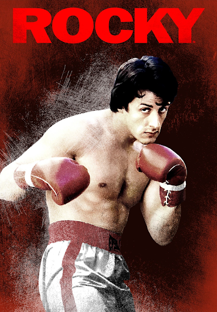

Opis filmu Rocky
Rocky jest filmem opowiadającym historię boksera. Samotny wdowiec Rocky Balboa (Sylvester Stallone) po śmierci żony prowadzi restaurację, która jest jego źródłem utrzymania. Niespodziewanie wyzwanie zaawansowanemu wiekiem Rocky'emu rzuca Mason Dixon (Antonio Tarver), aktualny mistrz świata w boksie. Bez zastanowienia Rocky przyjmuje wyzwanie.
